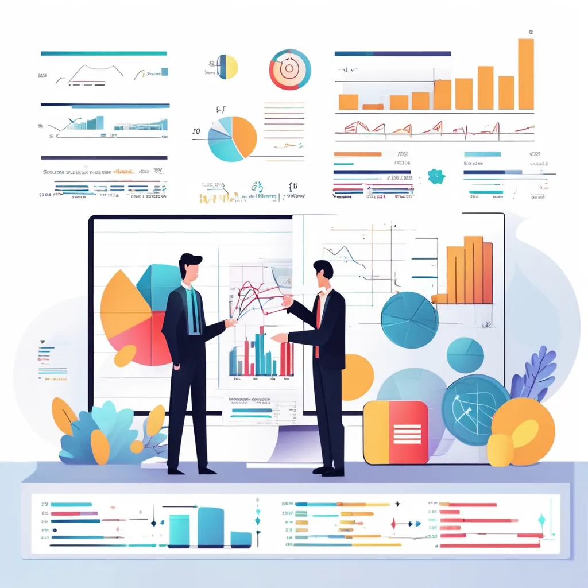
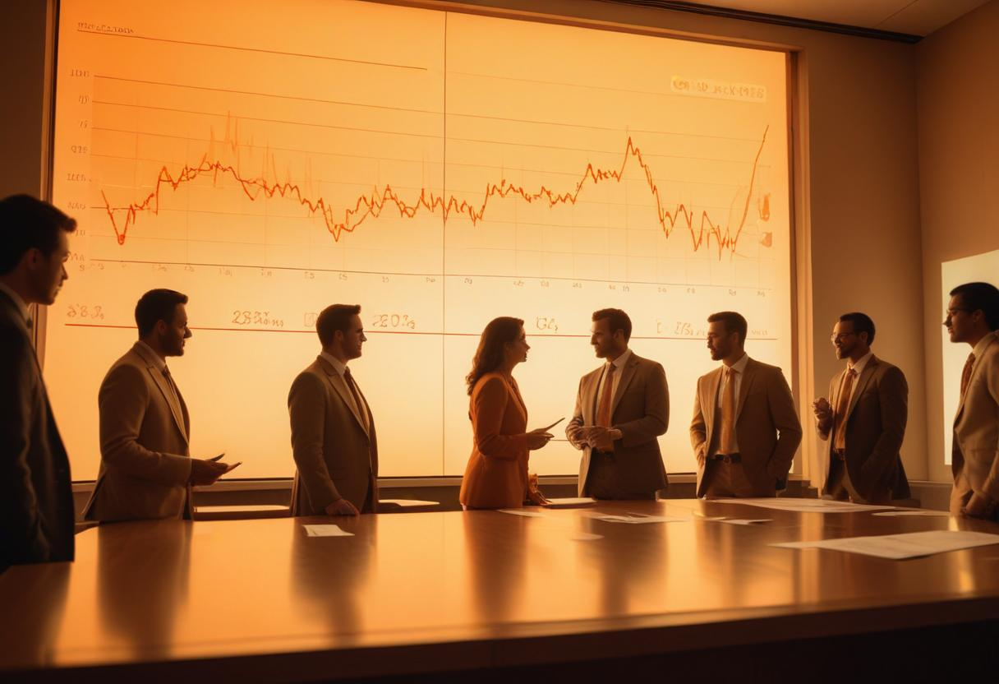
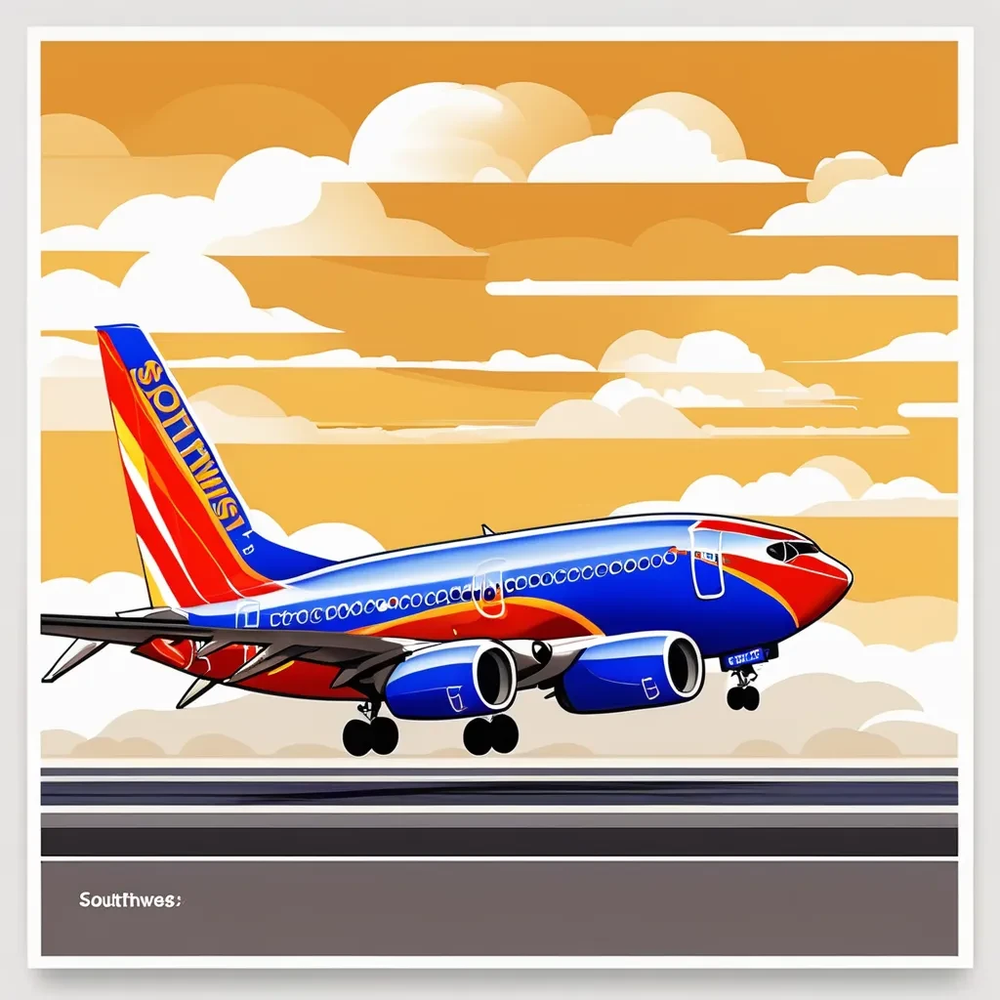

Contact
Programming Skills: R, Python, Matlab, Latex, Html, Julia, SQL
Softwares: PowerBI, STATA,MS office Suite, Eviews, SAS, SPSS, Bloomberg Terminal, Capital IQ, SQLite, Postgresql, Agile, Jupyter,Tableau, UNICET
Areas of Expertise: Econometric Analysis, Financial Modelling, M&A, Transfer Pricing, ESG
Hello! I'm a Financial Economics major at Texas A&M University, deeply passionate about exploring the intricate dynamics of finance and economics. My academic journey has equipped me with a strong foundation in econometrics, statistical methods in finance, financial management, and transfer pricing. This comprehensive education has fueled my enthusiasm for economic research, consultancy, and financial analysis.
Throughout my academic and professional career, I have actively sought opportunities to apply my knowledge in real-world scenarios. My experience as a research assistant spans various domains, including education and panel surveys. Additionally, I have served as a research intern on several development economics projects, where I honed my skills in analyzing diverse data sets, including panel, cross-sectional, time series, and pooled data.
My proficiency in programming languages such as R, Python, Stata, SAS, Julia, and Matlab allows me to tackle complex data analysis tasks with precision and efficiency. One of my proudest achievements is having a paper accepted at the prestigious International Conference of the Learning Sciences (ISLS), where I co-authored a study on constructionist approaches in teaching complex biology concepts. In addition to my technical skills, I have had the privilege of liaising with government and corporate stakeholders through various research projects. These experiences have not only enhanced my analytical abilities but also strengthened my communication and collaboration skills.
I am driven by a relentless commitment to excellence and a passion for breaking down complex economic issues.I am particularly interested in transfer pricing, mergers and acquisitions, and anti-trust issues. My long-term aspiration is to rise to the position of Vice President at a leading consultancy firm, where I can make meaningful contributions to the field of economic research and consultancy. Outside of my professional interests, I am a firm believer in the importance of personal growth and continuous learning. I approach every challenge with grit, consistency, and a dedication to hard work.
Thank you for taking the time to learn more about me. I look forward to connecting with like-minded professionals and exploring opportunities to contribute to the world of finance and economics.
• Chowdhury, Mahjabin, Anjana Azhuvath, and Asha Rao. "From Drawing to Understanding: Constructionist Approaches in Teaching Complex Biology Concepts." Proceedings of the 18th International Conference of the Learning Sciences-ICLS 2024, pp. 2141-2142. International Society of the Learning Sciences, 2024
• Technnological Unemployement in the Indian Automotive Industry, Indian Economic Association Conference, 2019
• Merit-based Scholarship, Department of Economics, Texas A&M University, (Jan 2023 - May 2023)
• Shri VL Ethiraj Merit-based Scholarship, Ethiraj College for Women (June 2018 - Apr 2019)
• Financial Management Association, General Officer, Texas A&M University (Aug 2024 - Dec 2024)
• Board Member, Chamber of Economics, Stella Maris College (Jun 2020 - Apr 2021)
• Association Secretary, Department of Economics, Ethiraj College for Women (Jun 2018 - Apr 2019)
• Bloomberg Market Concepts
• Bloomberg ESG
• CFI, Mergers and Acquisitions Modelling
• CFI, M&A Accounting and Price Allocation
• Coursework: Transfer Pricing, Financial Econometrics, Financial Management,Statistical Methods in Finance
• Coursework: International Trade, Econometrics I & II, Microeconomics I & II, Macroeconomics I & II
• Coursework: Foundations of Financial Accounting, Management Accounting, Statistics I & II
• Applied cross-sectional data analysis in R, quantifying the impact of translanguaging on K-12 classrooms
• Facilitated evidence-based curriculum design, estimating learner's skill development in an AI-integrated course
• Conducted a mixed-methods study using Jupyter to estimate the relationship between student confidence and test scores pre- and post-intervention
• Monitored execution of pilot survey across 876 households
• Collaborated with project team to estimate 2023-2024 fiscal year expenses, securing Rs. 1 million in funding
• Engineered onboarding documents, resulting in 28% reduction in training period
• Ascertained effectiveness of food assistance schemes and financial aid during COVID-19 lockdown using STATA
• Partnered with research team, producing 32 district-level reports, utilizing pre-baseline findings
• Initiated development of high-frequency dashboards tracking KPIs, including competition rate, consent rates, and enumerator bias, boosting productivity by 14.3%
• Reported and visualized findings on online education access and vaccine uptake for 12741 households on Tableau
• Executed comprehensive audio audit, back-checks and super-checks for telephonic interviews for 300 participants
• Reported and visualized findings on online education access and vaccine uptake for 12741 households on Tableau
• Executed comprehensive audio audit, back-checks and super-checks for telephonic interviews for 300 participants
• Orchestrated a tool-kit for preliminary data analysis on MS Excel for sophomore-year students
• Employed dummy-variable and semi-log models, determining the academic achievement and regional disparities prior to the pandemic.
• Performed in-sample forecasts to check for best fit model, identifying 8% quarterly sales growth potential
• Developed and automated financial models to forecast revenues, cash flows, and other key financial metrics,contributing to a 21% reduction in budget preparation time
• Enhanced client's operational efficiency by 3.5%, adopting tech-enabled audit of Oem dealerships.
• Performed feasibility studies and real-time data projections, forecasting passenger & goods traffic on proprietary software.
• Minimized trade rejections cost by 2% for NRE clients through optimized trade execution processes
• Improved client retention by 5%through expedited pay-in and pay-out procedures
• Administered margin shortfall protocols and square-offs to mitigate credit risk exposure for 35 clients
Empirically examined the volatility spillovers using GARCH, VAR and Granger Causality
View Project Constructed Free Cash Flow Capital Budgeting Model, implementing NPV, Payback Period, IRR,and MIRR, facilitating decision-making
View Project Built a rolling and recursive window forecast using quarterly term-spread and real GDP data.
View ProjectAnalyzing the Impact of the Damore Memo on Google's Company Culture and Subsequent Response Strategies
View ProjectAn examination of the coordination challenges faced by a software development team with members located on the West Coast of the US and in Bangalore, India.
View Project Given the evolving and dynamic nature of Southwest Airlines' business environment, the company may face several potential challenges in maintaining its renowned corporate culture. An analysis and evaluation of the company's future and culture is explored.
View Project